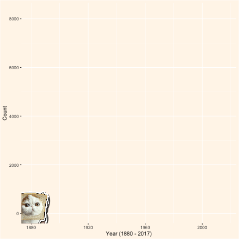

How common is the name Adrienne for a girl?
Date created: March 2021
Tools used: R (ggplot2, gganimate)
My name is Adrienne and it's pronounced A-dree-anne or A-dree-un. My name is uncommon in Singapore and it's often confused as Adrian, the male version of the name. And so when I tell people my name, I'm very used to getting the same reaction: "Adri- What?" or "Isn't that a guy's name?"
In this visualisation, I wanted to look at the popularity of the name Adrian (and its variants, e.g. Adrienne, Adrien, Adrianne, Adriane...) over time and see whether it was always predominantly a boy's name. To my surprise, that wasn't always the case.
Number of boys and girls named Adrian (and it's variants) over time
After taking a closer look, it's clear that the number of boys and girls called Adrian were roughly the same up until around 1980s. After that time, you can see that there was a coninuous increase in boys named Adrian but a sharp decrease among girls
So what happened before the 1980s?
Why was the name so popular among girls? Turns out, the name owes its popularity to the female celebrities in the 20th century. During that time, contemporary actress Adrienne Barbeau starred in a highly popular sitcom (1972-1978). The number of girls named Adrian peaked in the late 70s and early 80s. It was due to the famous actress that the name was as popular among girls as boys.
.png)
In fact, between the 30s and the 70s, you're more likely to find a girl called Adrian than a boy. The name's popularty shot up by 49% in one year alone (1932) following the release of an American movie called "The Death Kiss", starring actress Adrienne Ames.
In the 21st century, you're 13 times more likely to find a guy called Adrian than a girl. It's a pity that the name has lost it's popularity among girls, having said that, I adore the name that my parents gave me and enjoyed learning a bit about the history of this name through the making of this data vis.
Data from the R package called "babynames" and the information about history of the name is from www.ohbabynames.com (Check out your name on their website, you might learn something new :).